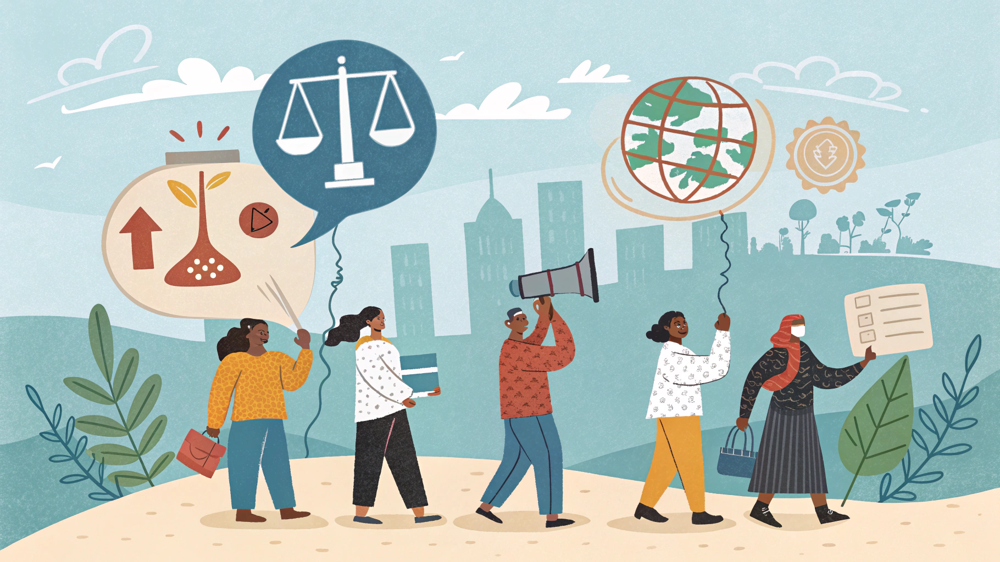
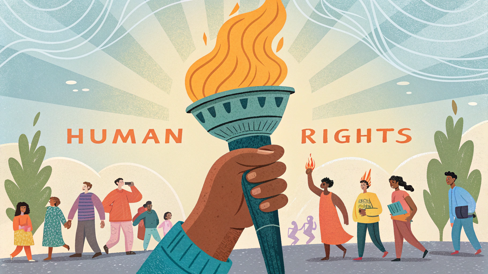
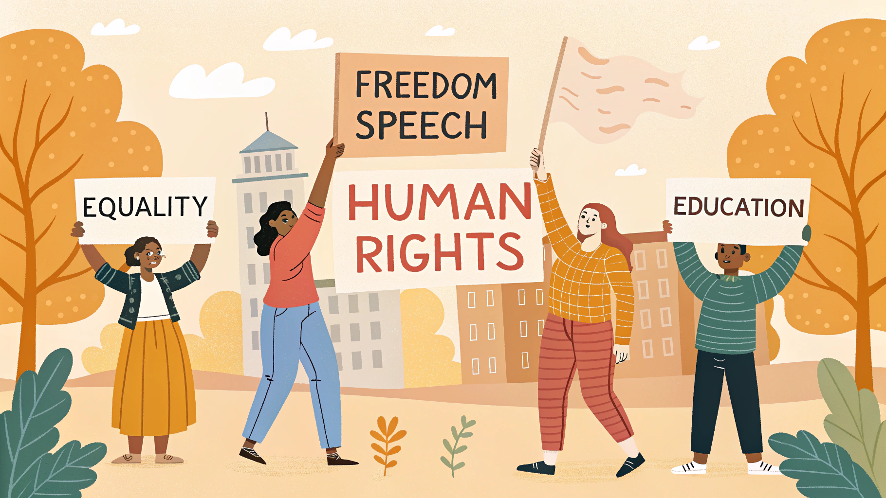
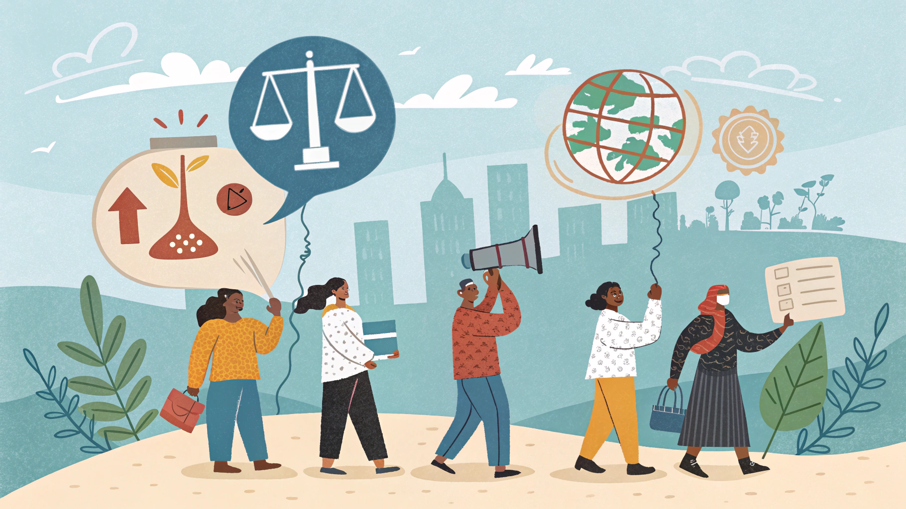
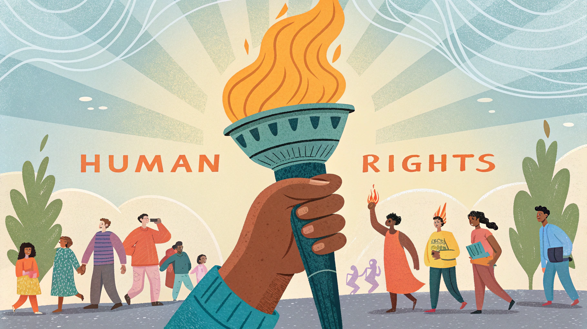
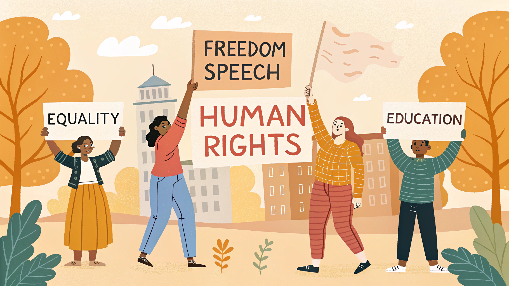
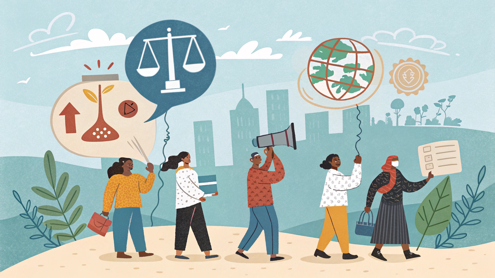
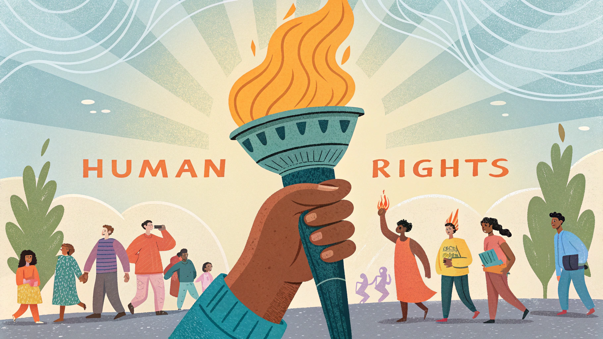
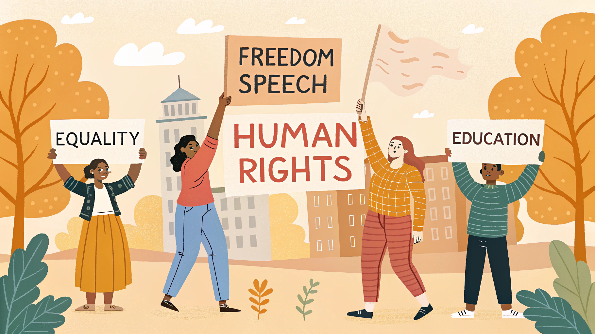
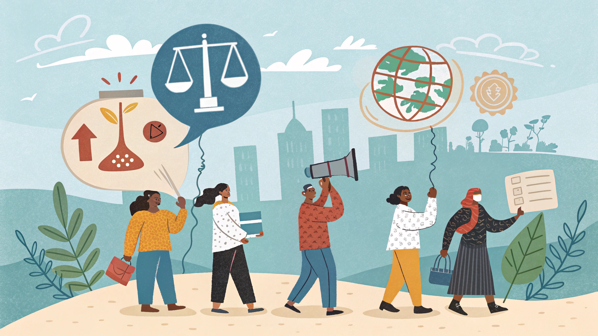
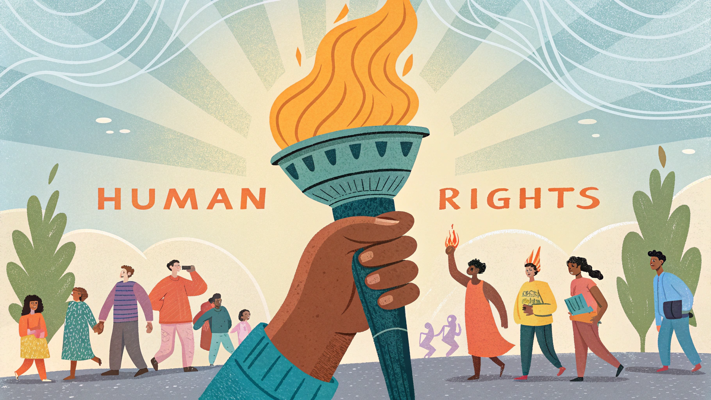
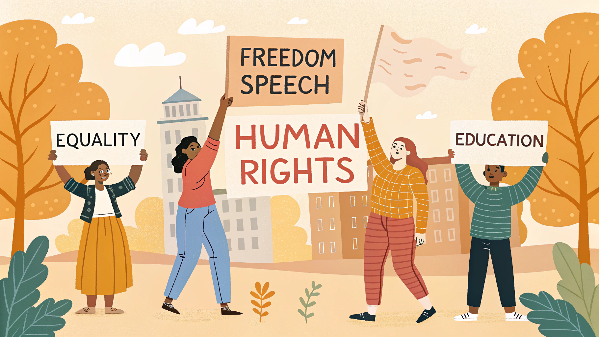
İnsan hakları, geçmişimiz, yaşadığımız yer, görünüşümüz, düşüncemiz veya inancımız ne olursa olsun her insanın içsel değerini kabul eder.
Daha Fazla Bilgi EdininKısa bilgiler yükleniyor...

Kadınların eşit haklara sahip olması, her bireyin temel hakkıdır. Toplumsal cinsiyet eşitliği için birlikte mücadele edelim.

Çocuklar, sağlıklı büyüme, eğitim alma ve güvenli bir ortamda yaşama hakkına sahiptir. Her çocuğun eşit fırsatlar ile korunması gerekmektedir.

Engelli bireylerin, toplumda tam katılım sağlama hakkı vardır. Herkesin eşit fırsatlara erişebilmesi için toplumun her alanı erişilebilir olmalıdır.

Engelli bireylerin, toplumda tam katılım sağlama hakkı vardır. Herkesin eşit fırsatlara erişebilmesi için toplumun her alanı erişilebilir olmalıdır.
.png)
Her insanın yaşamı, dünyaya dokunan eşsiz bir hikayedir. Yaşama hakkı, bu hikayeyi özgürce yazabilmenin en temel şartıdır.

Her insanın yaşamı, dünyaya dokunan eşsiz bir hikayedir. Bu hikaye, farklılıklarımızla zenginleşir ve insanlık değerleriyle anlam kazanır.
Yeniliklerden haberdar olmak için e-posta adresinizi girin.